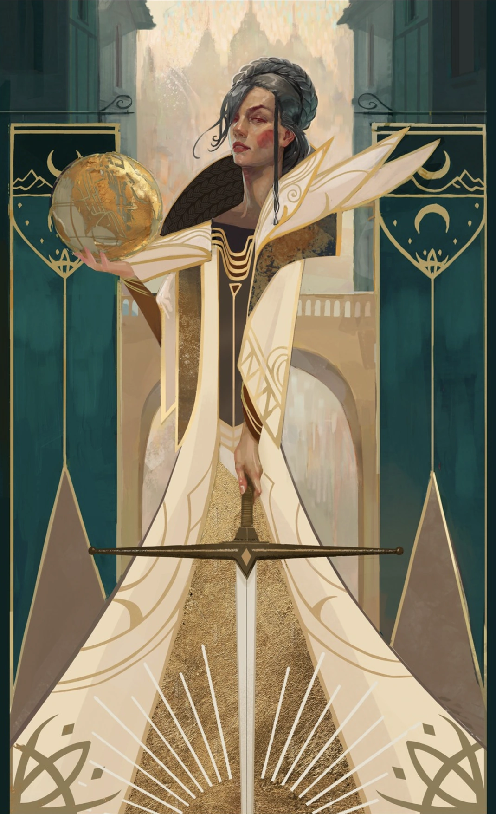
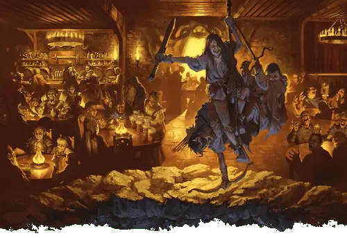
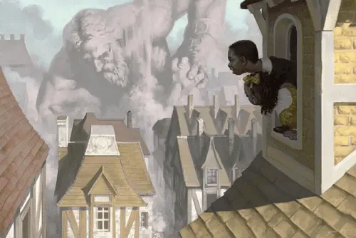
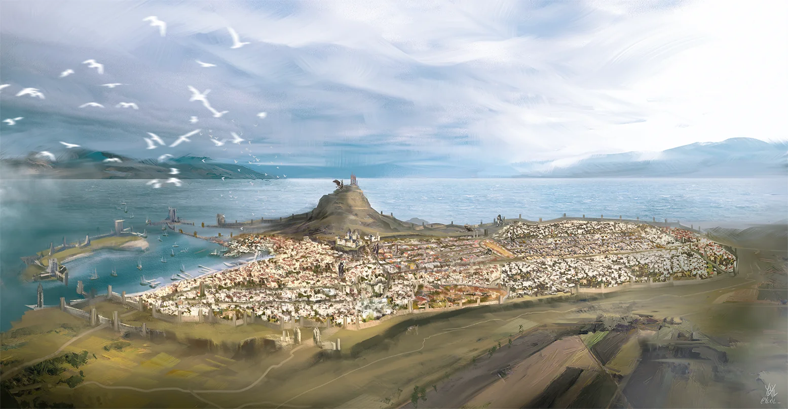

Serving the City of Splendors Since the Year of the Wandering Wyvern

By Staff Correspondent
Last eve's festivities honoring the Lady of Joy drew thousands into the streets as every ward erupted in music, dancing, and merriment. From the Field of Triumph to the Dock Ward's alehouses, pink lanterns illuminated the night while illusionists painted the skies with magical fireworks.
Lady Laeral Silverhand addressed gathered citizens outside Piergeiron's Palace shortly before sunset.
"Waterdeep endures because every guild, every sailor, every merchant, every noble, and every laborer keeps faith with the city."
The City Watch reports only minor disturbances despite unusually heavy attendance.
Visitors often ask the same question: "Who truly rules Waterdeep?" The answer is both simple and mysterious.
At the head of the city stands Open Lord Laeral Silverhand, whose face is known throughout Faerûn. Yet true authority is shared with the Masked Lords, whose identities remain among the city's greatest secrets.
This practice dates back nearly five centuries to Ahghairon, who overthrew the last warlord and decreed that no lord should know the identity of another. By hiding themselves behind enchanted masks and secrecy, bribery, coercion, and assassination became nearly impossible.
Justice is administered daily by the city's Magisters, recognizable by their black robes. Meanwhile the City Watch patrols the streets, the City Guard protects the walls and gates, and the famed Griffon Cavalry watches from above.
The result is perhaps the most stable government upon the Sword Coast — a city ruled not by kings, but by laws.
Though critics grumble that the Masked Lords are too secretive and the guilds too influential, few cities upon the Sword Coast can boast such peace, prosperity, or continuity of rule. Trade flows, justice is rendered, and the city's banners still fly proudly above its walls. Whether the Lords' ancient system shall continue to withstand the challenges of an ever-changing age is a question only time can answer.

Few taverns in Faerûn enjoy the reputation of The Yawning Portal. Standing in the Castle Ward, the establishment is famous not merely for its ale, but for the enormous stone well dominating its common room.
The shaft descends into Undermountain, the greatest dungeon ever delved.
Its proprietor, Durnan, first descended those depths centuries ago alongside the famed adventurer Mirt. While Mirt turned to politics and commerce, Durnan built his tavern directly above the ancient entrance.
For a modest fee — and a stout constitution — adventurers are lowered into the darkness by winch. Some return laden with unimaginable riches. Many never return at all.
Locals often remark that Durnan never advertises.
"The screams do that well enough."
No name inspires equal parts fascination and dread. Before Waterdeep became the City of Splendors, a solitary wizard built a tower beneath Mount Waterdeep. His name was Halaster Blackcloak.
There he gathered apprentices and slowly transformed ancient dwarven halls into what became Undermountain.
Centuries passed. Halaster disappeared below the earth. Yet countless adventurers report encountering the Mad Mage to this very day.
Whether immortal, undead, or something stranger, no scholar can say. What all agree upon is simple: if Halaster truly dies, he rarely remains dead for long.
Visitors inevitably stop and stare. Some climb them. Children play upon them. Merchants build shops inside them. The Walking Statues have become symbols of Waterdeep itself.
Originally hidden upon the Ethereal Plane, the colossal constructs appeared during the Spellplague, marching through the city before mysteriously halting.

Among the most beloved are:
Few citizens doubt that should Waterdeep ever truly face destruction, they may walk again.

Every ward boasts its own colors, rivalries, festivals, and traditions, making each feel like a city unto itself.
As twilight fell yesterday, musicians flooded the streets while dancing spread from taverns to noble courts. The Griffon Cavalry launched brilliant magical fireworks above Mount Waterdeep, visible as far as Rassalantar.
Children chased illusionary butterflies through the Market while guilds sponsored feasts and contests. Many visitors remarked that nowhere in Faerûn celebrates quite like Waterdeep.
As one elderly Dock Ward sailor declared,
"The ale flows, the music never ends, and tomorrow's headaches are tomorrow's problem."
Long before men arrived, this land belonged to the elves of Aelinthaldaar. Later came the dwarves of Clan Melairkyn, who carved vast halls beneath Mount Waterdeep in search of mithral. Centuries afterward, the wizard Halaster made those halls his own.
Human settlers founded Nimoar's Hold upon the harbor, until the mage Ahghairon overthrew the final warlord and established rule by the Lords.
Since then the city has survived troll wars, dragons, the Time of Troubles, the Spellplague, and the Sundering. Each catastrophe left its mark. Each generation rebuilt.
Today Waterdeep remains the greatest city upon the Sword Coast, a place where nobles, adventurers, merchants, scholars, rogues, and heroes all call home.